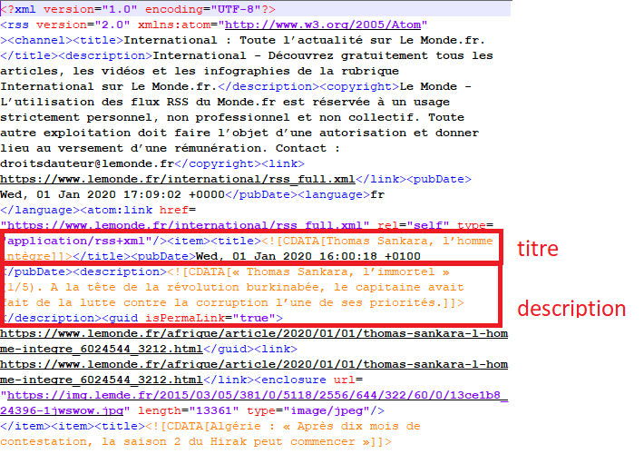
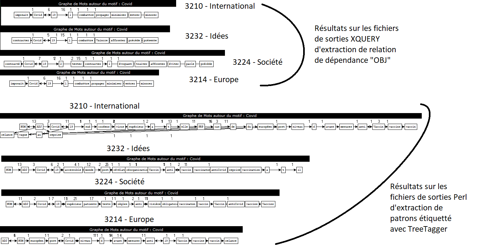

Le projet des boites à outils a pour but d'extraire les titres et description d'un flux RSS afin de les étiqueter et de faire de l'extraction terminologique à partir de patron. Il a également pour but l’apprentissage du langage Perl. Pour ce faire, nous avons réaliser trois boites à outils :
– BàO1 : extraction de texte (Perl, script de filtrage et de nettoyage…)
– BàO2 : Etiquetage (Treetagger, Talismane..)
– BàO3 : Extraction terminologique
Le corpus de fils RSS utilisé est celui du journal Le Monde. Il est constitué de 17 fils RSS archivés une fois par jour à 19h00 sur toute l’année 2020. Chacun des fils est accompagné de sa version « textuelle » (dite profonde) au format Lexico3, format que nous ne traiterons pas : nous nous concentrerons uniquement sur les fichiers au format xml.
Dans notre projet, nous ne traiterons pas toutes les rubriques/tous les fils RSS. Nous en avons choisi que quatre :
- la rubrique « international », numéro 3210
- la rubrique « Europe », numéro 3214
- la rubrique « société », numéro 3224
- la rubrique « idées », numéro 3232
Le but est de parcourir toute l'arborescence et extraire les contenus textuels de tous les fils. On va commencer par extraire tous les titres et descriptions d’un fils RSS. Pour rappel, un fils RSS est un fichier xml répondant à quelques contraintes. En examinant un fils RSS, on repère où se trouve les titres et les descriptions :
On a deux méthodes d’extraction des titres et des descriptions :
Maintenant, il nous faut traiter chaque fichier dans l’arborescence des fichiers du corpus. Pour cela, on va utiliser une fonction récursive. Cette dernière fonctionne ainsi :
Pour finaliser cette première boite à outil, on va assembler le script de parcours dans l’arborescence de fichier à celui d’extraction des titres et des descriptions.
On a donc deux scripts :
Un script utilisant les expressions régulières : BAO1_parcours-arborescence-fichiers-regexp.pl
Un script utilisant la bibliothèque XML ::RSS : BAO1_parcours-arborescence-fichiers-rss.pl
On constate que le script utilisant les expressions régulières est plus rapide que celui utilisant la bibliothèque XML ::RSS, on va donc le conserver pour la BàO 2.
Voici les résultats de la BAO 1 :
Les sorties au format texte : sortie-slurp_3210.txt, sortie-slurp_3224.txt, sortie-slurp_3214.txt, sortie-slurp_3232.txt
Les sorties au format xml : sortiexml-slurp_3210.xml, sortiexml-slurp_3224.xml, sortiexml-slurp_3214.xml, sortiexml-slurp_3232.xml
Les contenus textuels extraits doivent maintenant être étiquetés automatiquement en utilisant Treetagger et UDpipe pour de l’annotation en morpho-syntaxe et en dépendances.
La BàO1 produit 2 sorties, à savoir un fichier texte et un fichier XML. On va donc enrichir le fichier XML par un étiquetage via TreeTagger. On va aussi utiliser le fichier texte pour étiqueter via UDpipe.
Pour mettre en œuvre cet boite à outil, deux stratégies s’offrent à nous : annoter "au fil de l'eau" (c’est-à-dire dès qu'on extrait le texte) ou globalement (c’est-à-dire sur l'ensemble des données extraites).
Quelle est la meilleure solution à adopter ? Pour le savoir, on va tester les deux méthodes.
Voici le script de la méthode "au fil de l'eau:
Voici le script de la méthode "globale":
On constate sans équivoque que la méthode "globale" est plus rapide que la méthode "au fil de l'eau". En effet, dans la méthode "au fil de l'eau", le programme ne cesse d'ouvrir et fermer des fichiers, ce qui ralenti considérablement le temps de traitement (surtout en considérant le nombre de fichier qu'on traite au totale). Voici donc l'option retenue pour la BàO 2: BAO2_parcours-arborescence-fichiers-regexp-global.pl
Voici les résultats de la BàO 2 :
Les sorties de l'étiquetage UDpipe au format conll: sortieudpipe-slurp_3210.txt, sortieudpipe-slurp_3224.txt, sortieudpipe-slurp_3214.txt, sortieudpipe-slurp_3232.txt
Les sorties de l'étiquetage UDpipe au format xml: sortieudpipe-slurp_3210.txt.xml, sortieudpipe-slurp_3224.txt.xml, sortieudpipe-slurp_3214.txt.xml, sortieudpipe-slurp_3232.txt.xml
Les sorties Treetagger au format xml : sortiexml-slurp_TT_3210.txt.xml, sortiexml-slurp_TT_3224.xml, sortiexml-slurp_TT_3214.xml, sortiexml-slurp_TT_3232.xml
On va rechercher et extraire des termes sur les données étiquetées grâce aux étiquettes morpho-syntaxiques.
Voici les patrons recherchés :
NOM PREP NOM PREP
VERBE DET NOM
NOM ADJ
ADJ NOM
ADJ NOM NOM
ADJ ADJ NOM
Comme vu dans le cours "Document structuré", on peut récupérer les termes utilisant les patrons avec une feuille de style XSLT sur un fichier xml (les fichiers xml utilisés sont ceux étiqueté avec TreeTagger)
ADJ ADJ NOM: BAO3_patron-extraction_ADJADJNOM.xsl, _extraction-xsl_TT_3210-ADJADJNOM.txt, _extraction-xsl_TT_3214-ADJADJNOM.txt,_extraction-xsl_TT_3224-ADJADJNOM.txt, _extraction-xsl_TT_3232-ADJADJNOM.txt
ADJ NOM: BAO3_patron-extraction_ADJNOM.xsl, _extraction-xsl_TT_3210-ADJNOM.txt, _extraction-xsl_TT_3214-ADJNOM.txt,_extraction-xsl_TT_3224-ADJNOM.txt, _extraction-xsl_TT_3232-ADJNOM.txt
ADJ NOM NOM: BAO3_patron-extraction_ADJNOMNOM.xsl, _extraction-xsl_TT_3210-ADJNOMNOM.txt, _extraction-xsl_TT_3214-ADJNOMNOM.txt,_extraction-xsl_TT_3224-ADJNOMNOM.txt, _extraction-xsl_TT_3232-ADJNOMNOM.txt
NOM ADJ: BAO3_patron-extraction_NOMADJ.xsl, _extraction-xsl_TT_3210-NOMADJ.txt, _extraction-xsl_TT_3214-NOMADJ.txt,_extraction-xsl_TT_3224-NOMADJ.txt, _extraction-xsl_TT_3232-NOMADJ.txt
NOM PREP NOM PREP: BAO3_patron-extraction_NOMPREPNOM.xsl, _extraction-xsl_TT_3210-NOMPREPNOMPREP.txt, _extraction-xsl_TT_3214-NOMPREPNOMPREP.txt,_extraction-xsl_TT_3224-NOMPREPNOMPREP.txt, _extraction-xsl_TT_3232-NOMPREPNOMPREP.txt
VERB DET NOM: BAO3_patron-extraction_VERDETNOM.xsl, _extraction-xsl_TT_3210-VERDETNOM.txt, _extraction-xsl_TT_3214-VERDETNOM.txt,_extraction-xsl_TT_3224-VERDETNOM.txt, _extraction-xsl_TT_3232-VERDETNOM.txt
On peut faire la même chose en XQUERY. Cette fois-ci, on va essayer d'extraire tous les patrons d'un coup pour un fichier xml étiqueté par Teetagger.
Rubrique 3210: BAO3_extraction-xq_TT_3210.xq, _extraction-xq_TT_3210.txt
Rubrique 3214: BAO3_extraction-xq_TT_3214.xq, _extraction-xq_TT_3214.txt
Rubrique 3224: BAO3_extraction-xq_TT_3224.xq, _extraction-xq_TT_3224.txt
Rubrique 3232: BAO3_extraction-xq_TT_3232.xq, _extraction-xq_TT_3232.txt
Monsieur Jeam-Michel Daube nous a présenté une solution en utilsiant Perl sur les fichiers texte UDpipe: BAO3_extrait_termino_udpipe.pl
Exemple d'execution: Perl BAO3_extrait_termino_udpipe.pl sortieudpipe-slurp_3210.txt patterns_udpipe.txt
Rubrique 3210: _extraction-perl_udpipe_3210.txt
Rubrique 3214: _extraction-perl_udpipe_3214.txt
Rubrique 3224: _extraction-perl_udpipe_3224.txt
Rubrique 3232: _extraction-perl_udpipe_3232.txt
On a fait la même chose avec les sorties intermédiaires texte de TreeTagger:BAO3_extrait_termino_TT.pl
Exemple d'execution: Perl BAO3_extrait_termino_TT.pl sortiexml-slurp_TT_3210.txt patterns_udpipe.txt
Rubrique 3210: _extraction-perl_udpipe_3210.txt
Rubrique 3214: _extraction-perl_udpipe_3214.txt
Rubrique 3224: _extraction-perl_udpipe_3224.txt
Rubrique 3232: _extraction-perl_udpipe_3232.txt
On constate que la solution la plus pratique est Perl. En effet, que ce soit pour la solution XSLT ou XQUERY, on doit écrire explicitement le patron dans le code, ce qui peut ammener à des erreurs. Ce n'est pas le cas en Perl, où on la liste des patrons est dans un autre fichier texte. De plus, la solution perl à l'aventage d'être généralisable à tout patrons qu'on veut extraire: il n'y a pas besoin d'ajouter des lignes de codes en plus.
On va rechercher et extraire des termes sur les données étiquetées UDpipe grâce aux relations de dépendances. Ov va, plus précisément, chercher tous les mots connecté dans une relation du type "obj". Pour cela, on va procéder ainsi:
Exemple d'execution: xsltproc BAO3_relation-OBJ-UD.xsl sortieudpipe-slurp_3232.txt.xml | sort | uniq -c |sort -rn > extraction/_OBJ_xsl_3232.txt
Le fichier xsl: BAO3_relation-OBJ-UD.xsl
Rubrique 3210: _OBJ_xsl_3210.txt
Rubrique 3214: _OBJ_xsl_3214.txt
Rubrique 3224: _OBJ_xsl_3224.txt
Rubrique 3232: _OBJ_xsl_3232.txt
Rubrique 3210: BAO3_extract-OBJ-udpipe-sort_3210.xq, _OBJ_xsl_3210.txt
Rubrique 3214: BAO3_extract-OBJ-udpipe-sort_3214.xq, _OBJ_xsl_3214.txt
Rubrique 3224: BAO3_extract-OBJ-udpipe-sort_3224.xq,_OBJ_xsl_3224.txt
Rubrique 3232: BAO3_extract-OBJ-udpipe-sort_3232.xq,_OBJ_xsl_3232.txt
Pour "capturer" les termes voulus comme en XSLT ou XQUERY, on va utiliser les expressions régulières.
Le fichier perl: BAO3_extract-relation-udpipe.pl
Exemple d'execution: perl BAO3_extract-relation-udpipe.pl sortieudpipe-slurp_3232.txt.xml "OBJ" > extraction/_OBJ_perl_3232.txt
Rubrique 3210: _OBJ_perl_3210.txt
Rubrique 3214: _OBJ_perl_3214.txt
Rubrique 3224: _OBJ_perl_3224.txt
Rubrique 3232: _OBJ_perl_3232.txt
Encore une fois, on constate que la solution Perl est plus efficasse. En effet, le programme peut extraire les gouverneurs et les dépendants de n'importe quelle relation de dépendance indiquée en argument. Au contraire, pour les solutions XQUERY ou XSLT, il faut écrire un code pour chaque relation qu'on veut extraire.
En réalisant ce projet, j'ai appris à envisager plusieurs solutions à un même problème et à choisir l'option à plus efficasse au vu de l'objectif à atteindre. J'ai également appris le langage Perl, et j'ai compris le formidable outil que sont les expressions régulières utilisé par Perl.
Pour terminer, voici de beaux graphes obtenus grâce à l'outil "Patron2graph" sur les fichiers text d'extraction de relation de type "OBJ" et sur les fichiers textes d'extraction de patron TreeTagger avec Perl: 